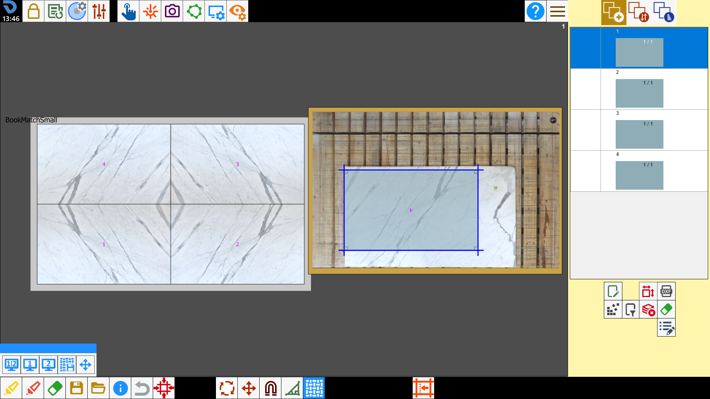
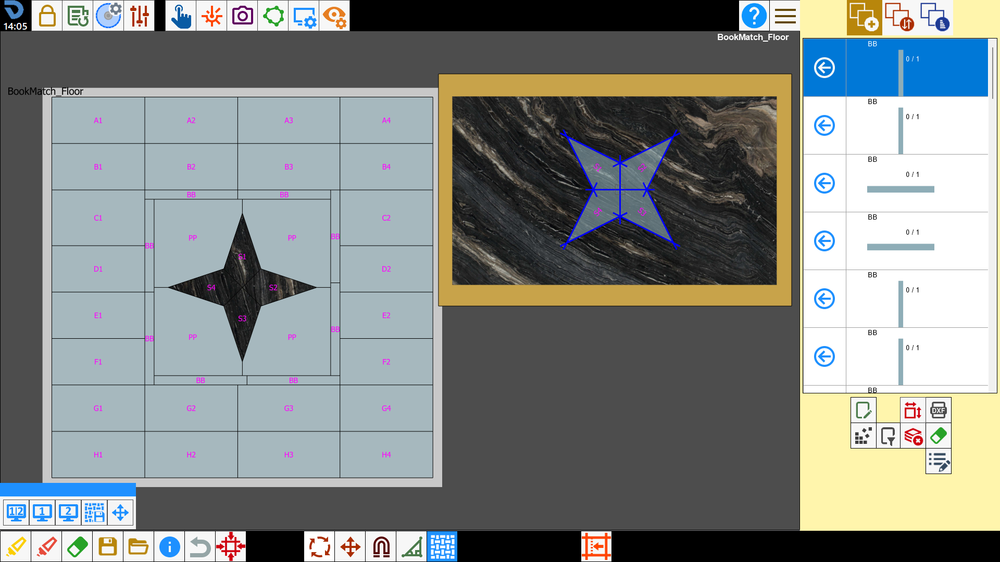
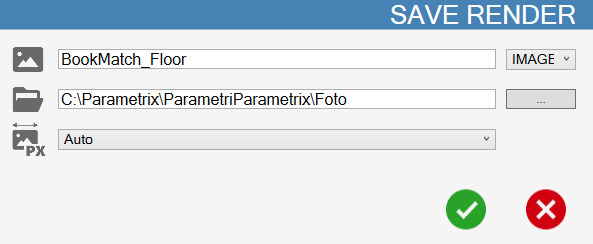
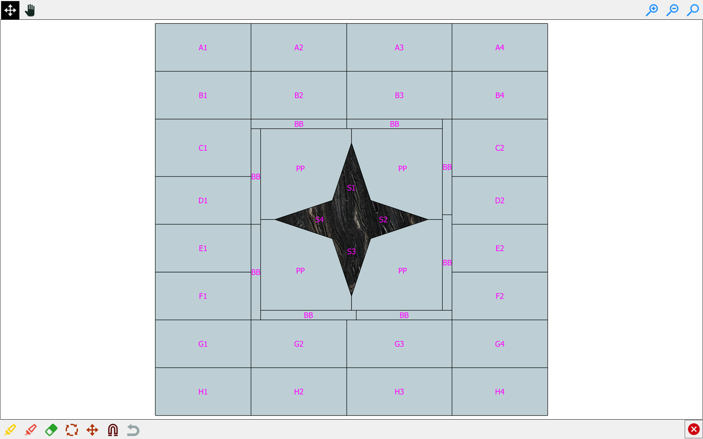
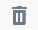
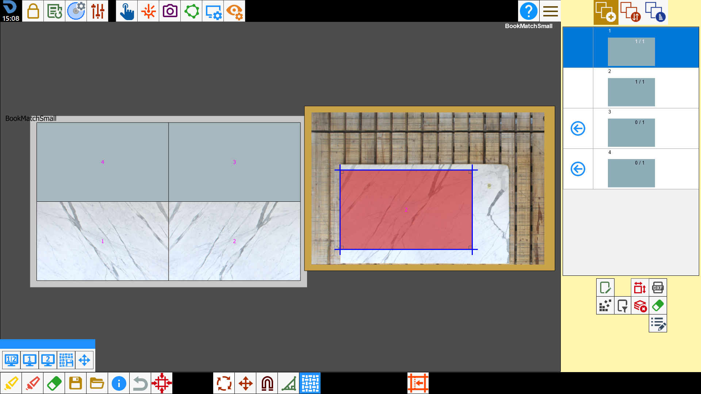

Attraverso la funzionalità Easy Match è possibile vedere, in tempo reale, lo sfondo che assumeranno i pezzi nella posizione originale nella quale sono stati progettati, spostandoli sul banco di lavoro sopra ad una lastra.

Pulsanti
Dopo aver premuto il pulsante, si apre il seguente pannello:
/image-20250623-092224.png)
/1.2-20250623-092621.png) | Vista affiancata |
Vista anteprima | |
Vista banco | |
/1.5-20250623-092940.png) | Salvataggio anteprima |
Modifica anteprima |
Vista anteprima
Permette di spostare i pezzi cliccando all'interno del perimetro del pezzo stesso, in questo modo sarà possibile posizionare il pezzo nella posizione desiderata con maggiore precisione.
/0.01.png)
Nell’anteprima sono visualizzati tutti i pezzi provenienti dal file importato nell'esatta posizione in cui sono stati progettati.
La dimensione dell'anteprima corrisponde in scala 1:1 con la dimensione dei pezzi progettati.
I pezzi aggiunti sul banco di lavoro assumono il colore della lastra, mentre quelli ancora da aggiungere hanno uno sfondo uniforme.
Dall'anteprima è possibile:
Aggiungere un pezzo sull'area di lavoro cliccando all'interno dell’area che si vuole lavorare.
Muovere un pezzo che si trova sul banco di lavoro.
Selezionare un pezzo sul banco di lavoro cliccando all'interno del pezzo.
Cancellare un pezzo dall'anteprima selezionando la gomma presente sotto la lista dei pezzi e successivamente selezionando il pezzo sull'anteprima che si vuole eliminare. In questo caso il pezzo sarà eliminato anche dal banco e dalla lista dei pezzi.
Vista banco
Vista classica del banco di lavoro di Parametrix. Permette di muovere i pezzi sul banco di lavoro sfruttando tutto lo schermo.
/0.02.png)
Vista affiancata
Permette di visualizzare sulla stessa schermata sia l’anteprima del progetto che il banco di lavoro.

Salvataggio anteprima
Permette di salvare l’anteprima della lavorazione in corso.
Si apre la seguente schermata:

Viene chiesto di scegliere il nome dell’anteprima, se salvarla come immagine o pdf, dove si vuole salvare e la sua risoluzione.
Per la risoluzione si può scegliere tra auto (risoluzione automatica), low, medium, high, ultra e custom (sceglie l’operatore la risoluzione precisa).
Una volta confermato verrà aperta in automatico la foto o il PDF dell’anteprima.
/image-20250623-094751.png)
/image-20250623-094847.png)
Modifica anteprima
In questa schermata si possono disporre a piacimento i pezzi che compongono l’anteprima.
Tutte le modifiche che vengono apportate poi vengono visualizzate anche dopo con le altre visualizzazioni.

Nella barra superiore si possono trovare i seguenti pulsanti.
Muovi pezzi | |
/2.03.png) | Muovi visuale |
Personalizzazione anteprima
All’interno del pannello dei parametri del programma, nella scheda dei valori utente, è possibile cambiare i colori di alcuni elementi dell’anteprima del progetto.
/4.00-20251008-084143.png)
Perimetro | Permette di mostrare/nascondere il perimetro dei pezzi all’interno dell’anteprima. |
Nome | Permette di mostrare/nascondere il nome dei pezzi all’interno dell’anteprima. |
Sfondo | Permette di impostare il colore dello sfondo dell’anteprima. |
 | Rimuovi sfondo |
Flusso di lavoro
Per lavorare utilizzando l’Easy Match, è necessario importare in Parametrix il progetto da un file DXF.
Il programma visualizzerà un anteprima della macchia aperta relativa ai pezzi presenti nel file.
/3.00.png)
Dopo aver scattato una foto al banco di lavoro, si può procedere con l’inserimento dei pezzi da tagliare sulla lastra.
Per fare ciò è possibile utilizzare il classico procedimento dalla lista dei pezzi oppure premere all’interno del perimetro di uno dei pezzi mostrati in anteprima.
Trascinando il pezzo dall’anteprima, questo si sposterà anche sulla lastra, utile per fare coincidere le venature tra i vari pezzi.
Si può fare anche il contrario, cioè trascinare il pezzo dalla lastra e vedere dall’anteprima se le venatura coincidono o meno in base a dove viene spostato.
/3.01.png)
A questo punto procedere con la procedura standard per la lavorazione: creare il programma ISO e tagliare la lastra.
Una volta concluso, premere il pulsante per passare alla lavorazione successiva.
Nell’anteprima rimarranno salvati i progressi dello stato di avanzamento del progetto.
Procedere con l’acquisizione della foto di una nuova lastra e l’inserimento dei pezzi all’interno del perimetro.

Continuare in questo modo fino al completamento del progetto.